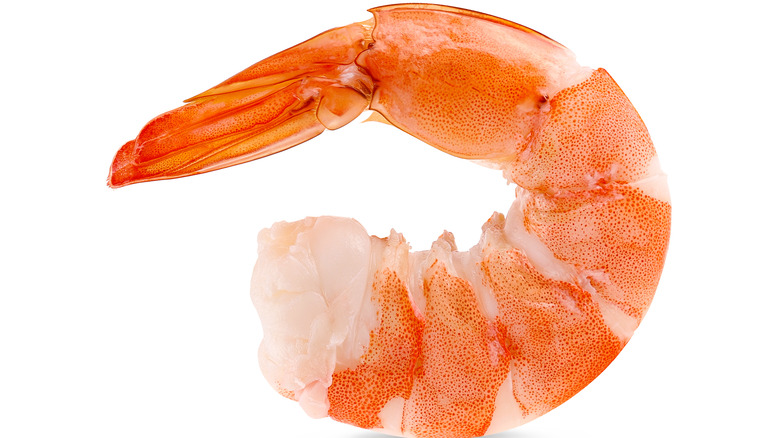

Garlic Shrimp Pasta Bake

Description
This shrimp casserole with noodles is quick and easy. With shrimp and pasta coated in a creamy herb sauce, this seafood pasta bake is a meal the whole family will love.
If the top of the dish is not a nice golden color after baking, you can broil it, watching closely, for 2 to 3 minutes.
Ingredients
- 1 (10 ounce) package penne pasta
- 3 tablespoons butter, divided
- 1 teaspoon vegetable oil
- 1 tablespoon minced garlic
- 1 pound uncooked medium shrimp, peeled and deveined
Steps
- Preheat the oven to 350 degrees F (175 degrees C).
- Bring a large pot of lightly salted water to a boil. Add penne and cook, stirring occasionally, until tender yet firm to the bite, about 11 minutes. Drain and set aside until needed
- While the pasta is cooking, heat 1 tablespoon butter and oil in a large oven-safe skillet over medium heat. Add garlic and cook until fragrant, about 30 seconds.
- Add shrimp, 2 tablespoons parsley, and dill; cook until shrimp are bright pink on the outside and the meat is opaque, 1 1/2 to 2 minutes per side.
- Transfer shrimp to a plate, leaving any cooking juices in the pan.
Back to menu